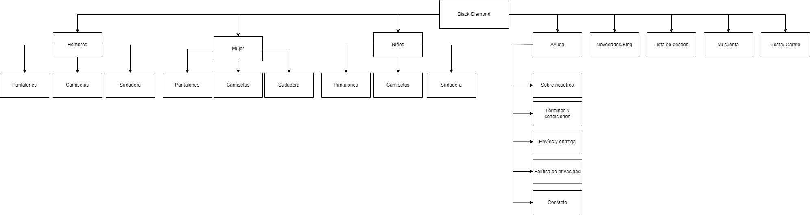

Making of tienda ropa online Black Diamond:
Aquí se explica el proceso a seguir para la creación de la tienda online:
- Una vez completados estos primeros pasos se empezó la instalación de wordpress, todo esto se hizo en una de las máquinas de oracle. Esto al principio dio problemas de que la máquina no soportaba la instalación de WooCommerce debido a que se había creado una máquina con muy poca RAM asignada. Una vez completada la instalación de la nueva máquina se realizó de nuevo la instalación de todos los servicios necesarios para poner en funcionamiento nuestra tienda de ropa online.
- Después de realizar la instalación de los servicios web se instaló de nuevo el wordpress con el plugin de WooCommerce. Una vez se instaló el plugin se procedió ha hacer la configuración de este.
- Posteriormente se realizó la instalación de varios plugins más para agregar funciones a la web y mejorar el funcionamiento de esta. Algunos de los principales plugins que se instalaron fueron los siguientes:
- All In One WP Security: Es un plugin que se encarga de mejorar la seguridad de la web. Incluye varias configuraciones distintas como por ejemplo el cambio de permisos de archivos determinados archivos, protección contra spam, bloquear accesos al superar un número de inicios de sesión configurables, agrega un cortafuegos básico a la web y bloque acceso al registro de depuración de la web.
- Complianz | GDPR/CCPA Cookie Consent: Este plugin se encarga de poner un pequeño desplegable con la política de Cookies de la página web, donde el usuario deberá aceptarla.
- Divi: En este caso no se trata de un plugin pero Divi ha sido el maquetador visual con el que nos hemos encargado de configurar los menús y todo lo relacionado con la parte estética de la página web. También se ha utilizando una plantilla de divi que posteriormente se ha modificado.
- Una vez realizada toda la instalación y configuración de los plugins principales, se pasó a la parte visual de la web, al frontend. Se descargó una plantilla de divi y fue editada, también se añadieron algunos elementos y se modificó el menú que tenía por defecto el tema.
- Al continuar con la tienda, se empezaron a crear algunos de los productos que se iban a vender. Se buscaron imagenes sin derechos de autor de diferentes sudaderas y fueron personalizadas mediante edición de imagen con Adobe Photoshop, cambiando algunos colores o añadiendo el logo de nuestra marca. Una vez hechas las imagenes de los productos se crearon estos haciendo que cada uno de los productos añadidos tuviera caracteristicas distintas. Por ejemplo: Se podría aplicar un cupón de descuento en casos de compra superiores a 20€, se añadieron varios colores para una misma sudadera, se añadieron diferentes tallas, precios rebajados...
- Dentro de nuestra web también se encuentra una parte muy importante que es el blog, donde se subieron tres noticias de actualidad sobre la marca.
- Una vez generadas todas las páginas principales a la web se empezó a añadir todo el tema legal de la web, lo que inluye la "Política de Privacidad", "Política de Devoluciones", "Cookies", "Envios y Entregas", "Términos y Condiciones" y el apartado de información básica de la empresa "Sobre Nosotros". Todo esto se añadió al pie de página de la web.
- Uno de los ultimos pasos para acabar de completar la web fue crear una red social de la marca, en este caso creamos una cuenta de twitter que también se añadió al pie de página.
- Por ultimo se realizó la configuración de los pagos de WooCommerce y la configuración del DNS.
Nuestra Tienda:
Conclusiones del Proyecto:
Este proyecto ha sido el que más me ha gustado hasta el momento, pero igual que otros proyectos considero que hay cosas que no han acabado de estar del todo bien organizadas. Algunos de los plugins necesitaban que la web disponga de un dominio operativo para realizar correctamente su configuración y el dominio fue algo que se dio prácticamente al final del proyecto.
Considero que este proyecto igual necesitaría algunas horas más y que se le pueda dedicar algo más de tiempo.
El primer día se decidió el nombre de la marca/empresa y se creo el logo, en este caso se trata de una marca de ropa que venderá accesorios, sudaderas, camisetas y pantalones para hombres mujeres y niños.
El Logo de la empresa es el siguiente, el cual se encontrará como estampado en toda la ropa de la tienda (Se hicieron dos logos, uno con texto y el otro sin):
Después de decidir el nombre de la empresa y generar un logo se hizo el Diagrama de la arquitectura de la página, siendo este el siguiente:
